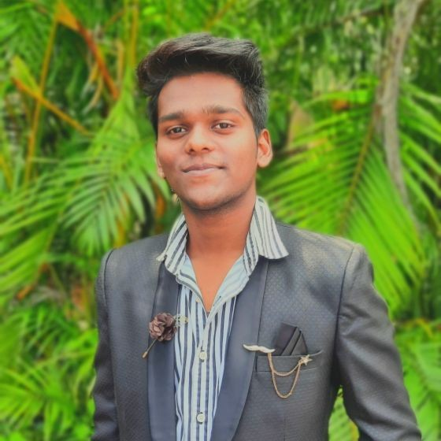

Ayush Varma

summary
Fresher Full Stack Developer with experience in MERN Stack. Skilled in frontend development using ReactJS, backend development using NodeJS and ExpressJS, and database management using MongoDB. Passionate about coding, learning new technologies, and building efficient, user-friendly applications. Ready to take on new challenges and contribute to the growth and success of the company.
Technical Skills:
- Frontend Development: ReactJS, HTML, CSS, JavaScript.
- Backend Development: NodeJS, ExpressJS.
- Database Management: MongoDB.
- RESTful APIs and CRUD operations.
- Code Quality and Standards: Adherence to coding standards and best practices.
- Debugging and Issue Resolution,
- Version Control: Git and GitHub.
- Integrated Development Environment (IDE): Visual Studio Code.
- Agile Project Management and Team Collaboration: GitLab and Slack.
Projects(going to):
- [Project Name]: Built a full-stack web application using MERN Stack for a local business. Implemented user authentication, data management, and secure API interactions.
Languages:
- English (Fluent)
- Hindi (Proficient)
- Marthi(Fluent)
Soft Skills:
- Adaptability: Ability to learn new technologies and programming languages quickly.
- Problem-Solving: Excellent analytical and critical-thinking skills.
- Teamwork: Strong interpersonal and communication skills.
- Time Management: Capable of managing multiple tasks and deadlines efficiently.
Career Objectives:
- Seeking an opportunity to leverage my skills and expertise in Full Stack Development in MERN Stack.
- Excited about the prospect of working in a challenging and dynamic environment where I can contribute to the growth and success of the company.
Education:
- Bachelor's of science(Information Tectnology), [University of Mumbai.]
Contact Details.